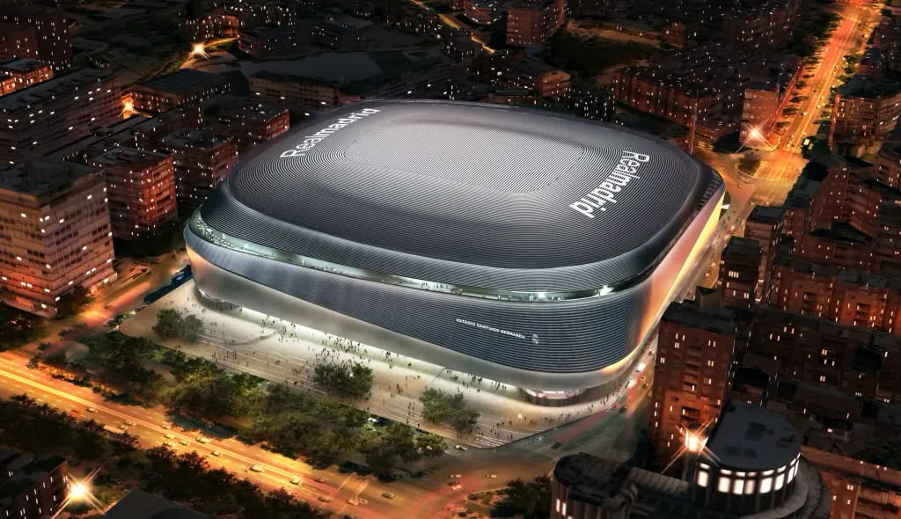

Santiago Bernabéu Stadium to jeden z najbardziej znanych stadionów piłkarskich na świecie. Znajduje się w Madrycie w Hiszpanii i jest domem klubu Real Madryt. Stadion został otwarty w 1947 roku. Nazwa pochodzi od byłego prezesa klubu Santiago Bernabéu. Jest jednym z najbardziej prestiżowych stadionów w historii piłki nożnej. Jego pojemność wynosi około 80 tysięcy widzów. Stadion regularnie gości mecze Ligi Mistrzów. Na Bernabéu grało wielu legendarnych piłkarzy. Wśród nich był Cristiano Ronaldo. Stadion pozostaje ikoną światowego futbolu.